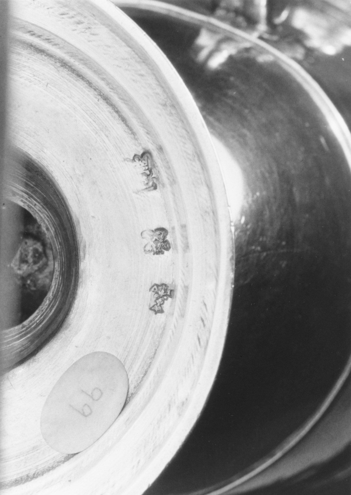

A second profile?
The dish shows a profile. A teapot has another circle, too worn to compare.
Three separate Met detail photographs share a display width; their source magnifications and physical scales differ. The shapes describe what I see, not a mark classification.



The Met's Paris / silver / 1697–1704 search returns seven records, including the dishes .172 and .173. On .173, a worn circular impression contains a visible head in profile. The teapot .78 shows another dark, round impression beside a crowned mark, but its interior is too indistinct to tell whether it repeats that profile. In the other published views I checked, I found no other clearly legible profile; one candlestick pair has no separate mark view.
The ewer and teapot supply neighbors in date and place, not names for the dish stamp. The ewer detail shows a separate group of marks; neither that view nor the teapot resolves the faint circle. The search opens a possible city-mark comparison, bounded by the available photographs, rather than a mark attribution. The three source images are Public Domain. Met search result.